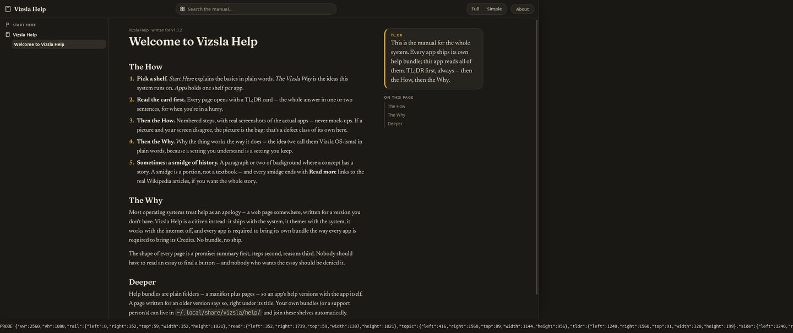
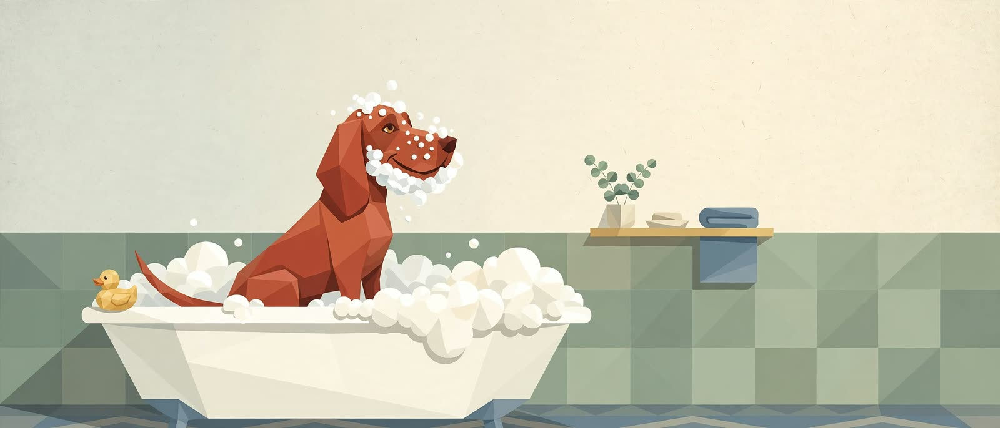
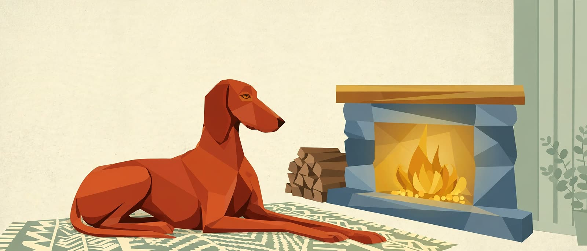
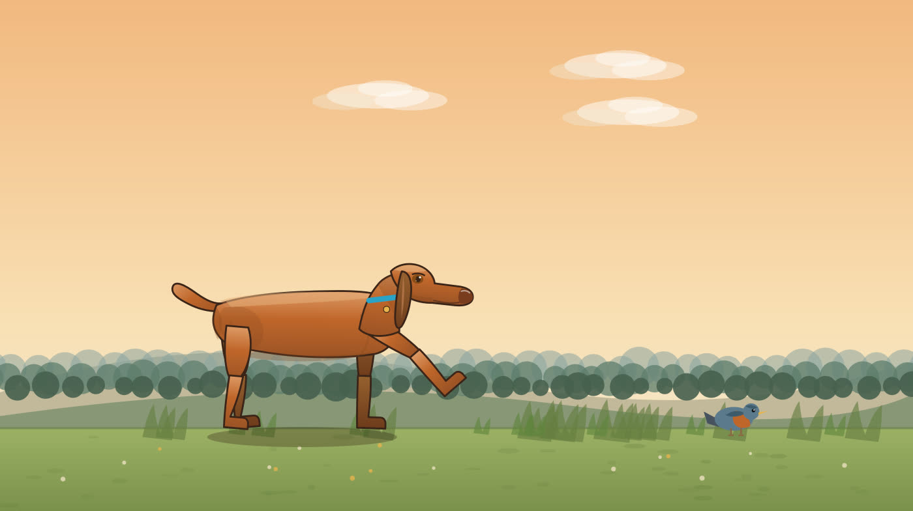
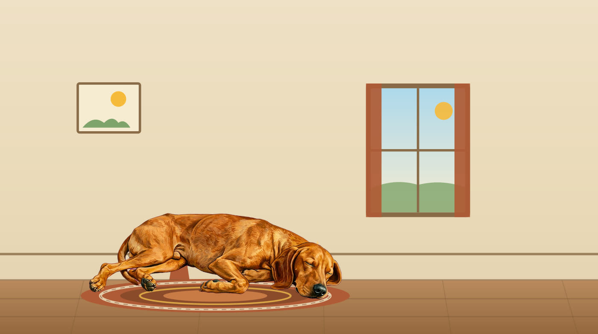
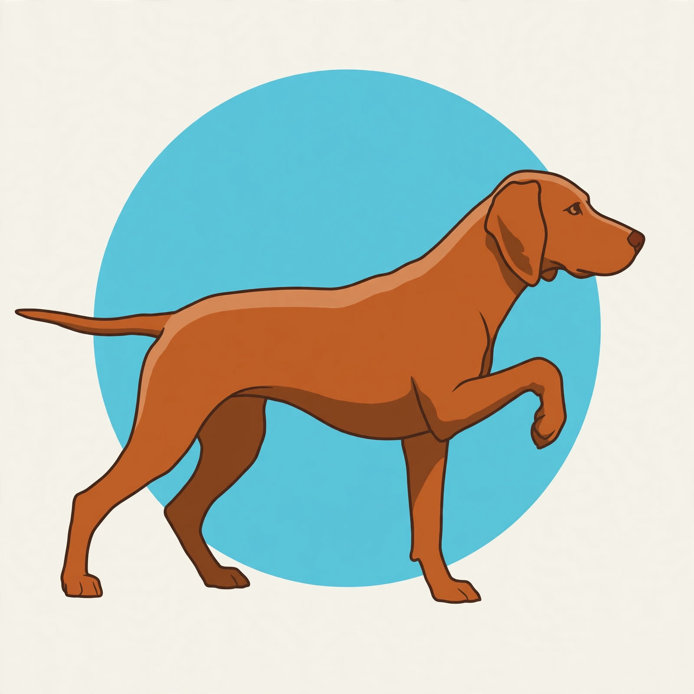
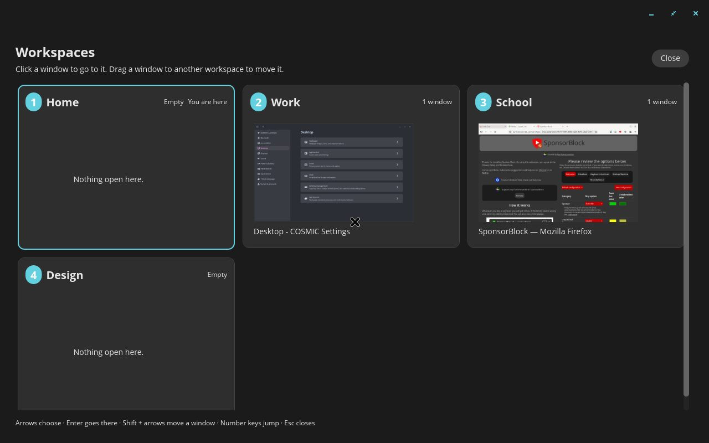

Vizsla OS
One system, every shape.
Private by design, kind on purpose.
Vizsla OS was built in a matter of weeks in Leesburg, Florida, by Richard Garrison — an HR and healthcare-operations man with a degree in English and Anthropology, a head full of whole worlds, and no intention of waiting a decade — working with an AI he directs in plain language, often sixteen hours a day. The build took weeks; the ideas were already years old — listed, wished for, and blueprinted on paper since at least 2019, with the full plan for that system written in the summer of 2026. Nothing requires an account. It is deliberately different in all the ways that matter — not just privacy, but kindness — and it is a labor of love that is still listening.
The honest status: Vizsla OS is in active development, being built in the open at home. There is no download yet — when there is, it will be right here. Read how it’s being made.

Calm by default — ready when you are
The default here is calm: a quiet screen, nothing pulsing for your attention. But calm is a posture, not a limit.
Suit and tie, one click
When it’s time to work, Vizsla puts on a virtual suit and tie and gets to business — your workspaces, documents, and tools up front, with a click of a button. Manners stay on; the tie is optional for you.
Rock all night
Or don’t work at all. Play your favorite tunes all night, or play virtually any video game — the arcade cabinet and the classic consoles are already in the house.
It teaches — then hushes
Vizsla teaches you how to do things as you go, in plain words, in its own manual and in the moment. And when you’d rather it didn’t, you can tell it to shut up — and it does. Kindly.
One piece of it is already loose in the wild: System Profiler, a Vizsla app you can download and run on any Linux PC today. Try it now.
Meet the Vizsla
Every operating system has a face. This one has a dog. The vizsla is all over Vizsla OS — in the wallpapers your day opens on, in the screen saver that covers an idle machine, in the portraits and the search hound. These pictures are the system’s own artwork, the very images that ship in it — no stock photos, and no photographs at all: the Vizsla of Vizsla is drawn, not photographed.





What makes it different
Nothing requires an account
Apps may offer a sign-in. The system never demands one. Your files live on your machines, and a “no” from you is recorded and never re-asked.
Updates that wait for you
Updates never lock you out of your own machine mid-work. They wait until you’re away, the machine is plugged in, and the network is unmetered — and they tell you what they’re waiting for, in plain words.
One system, every shape
Desktop, tablet, TV, console, phone, dash — the same apps and files, rearranged for the screen they’re on, never reduced. When the hardware is ready, we are ready.
A fleet that installs itself
Software is built once and lands, verified hash-by-hash, on every computer in the house that can run it. Drift is noticed, not discovered by accident.
One calm inbox for decisions
Every decision the system needs from its human collects in one place — Pass or Paws — to be answered in one sitting, in plain words. No app ambushes you with its own pop-up.
The Baking Hour
A new Vizsla machine sits and gestates for at least an hour after install — indexing, warming, pre-fetching — so it is fabulous the first time you touch it, not the fiftieth.
And it cancels subscriptions
Vizsla’s apps quietly stand in for a stack of paid ones — the grammar subscription, the office suite, the PDF plan, the read-it-later app, the home-upkeep tracker. Priced from the vendors’ own pages on 27 October 2026, the everyday home stack comes to $738.63 a year you stop paying — and the business shelf (menu boards, kitchen software, safety logs) adds $1,104 a year more. See the honest arithmetic — every price sourced, every “covers the everyday job, not the whole suite” said out loud.

Kind, in the small mechanics
If an app disappears and the system doesn’t know why, it asks — once, gently:
“hi it’s me. Sorry to bother but I’m not sure if you want to uninstall this. Please let me know if you want it reinstalled or not. No worries either way.”
If you removed it on purpose, it never asks at all. That is the design philosophy in one paragraph: operating systems have competed on power and polish for forty years. Nobody competed on being kind to the person at the keyboard. More on kindness & privacy.